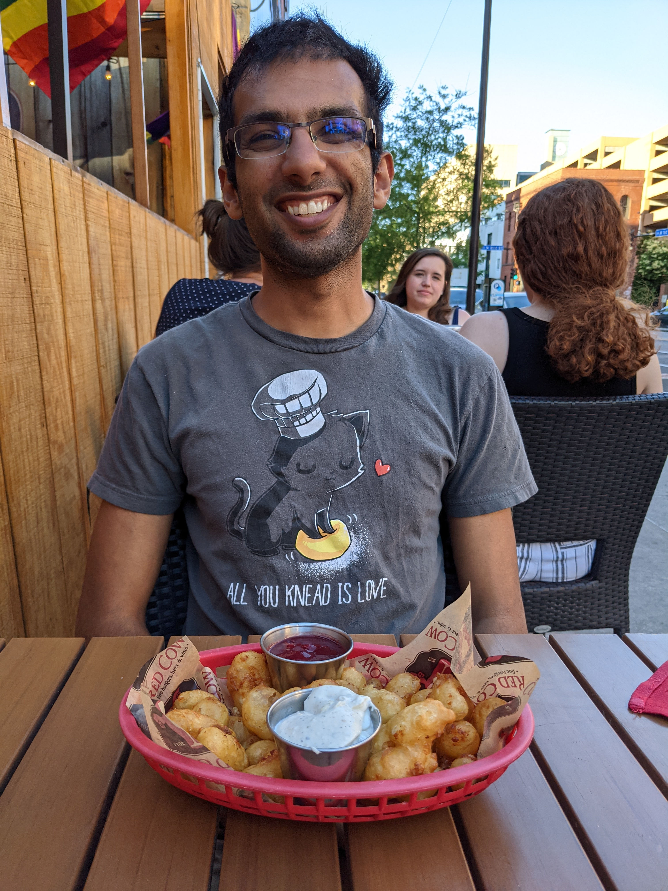

About Me

Hi! My name is Shishir; I also go by Sunny. I am a human being.
I’m currently employed as a postdoctoral mathematician at UC San Diego. I work and live on lands stewarded since time immemorial by the Kumeyaay people.
Besides math, other things I like doing include: doodling, reading, cooking, backpacking, studying language(s), and hanging out with my husband and my cat.
When linguistically relevant, I’m comfortable with the use of either masculine or generic grammatical gender in references to me (en: he or they pronouns, hi-ur: -ā inflections, …).
You can get in touch with me via email at:
- [PGP]
About the Website
Something on this website was last updated on August 20, 2023. Software used in its making includes: Jekyll (including jekyll-pandoc and jekyll-redirect-from), Inkscape, \(\KaTeX\), Ubuntu, and many other things I should probably mention…